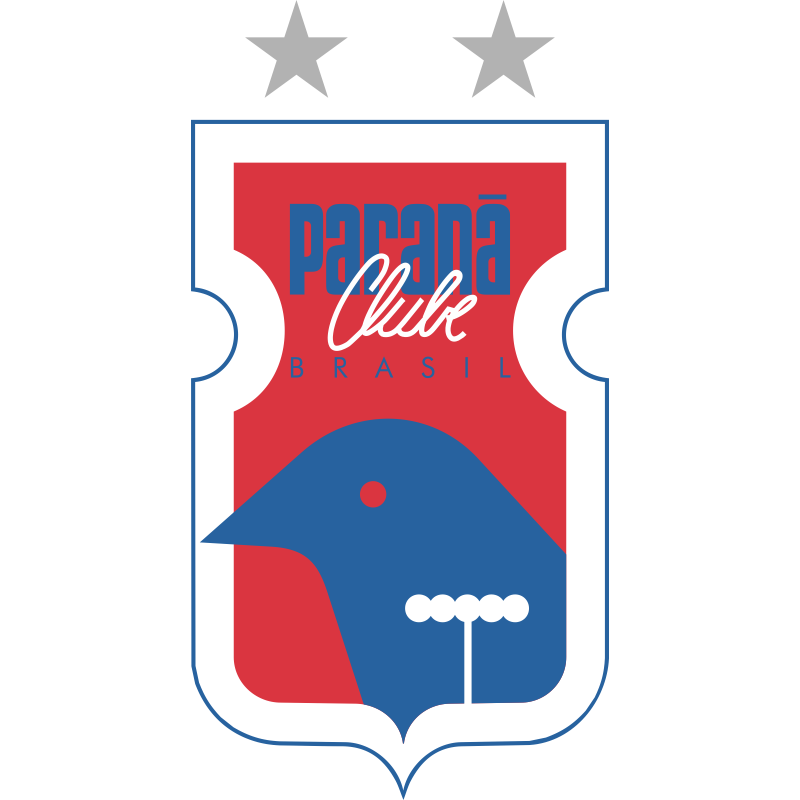
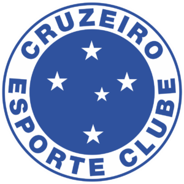

Flamengo

O Flamengo, fundado em 1895, é um clube brasileiro de destaque, com ênfase na conquista da Copa Libertadores em 2022, reafirmando sua grandiosa história e paixão de milhões de torcedores.
Fluminense
O Fluminense Football Club, fundado em 21 de julho de 1902, é uma instituição esportiva icônica no Brasil. Com uma história rica, destaca-se a conquista da Copa Rio Internacional em 1952, simbolizando a excelência do "Tricolor" no futebol e a paixão eterna de sua torcida.
Gremio

O Grêmio Foot-Ball Porto Alegrense, fundado em 15 de setembro de 1903, é um dos clubes mais vitoriosos e representativos do futebol brasileiro. Sua rica história é pontuada por conquistas notáveis, consolidando-o como uma potência no cenário esportivo.
São Paulo

O São Paulo Futebol Clube, fundado em 25 de janeiro de 1930, é outro gigante do futebol brasileiro com uma história marcante e conquistas que ecoam seu sucesso. Assim como o Grêmio, o São Paulo se destacou nacional e internacionalmente, moldando sua identidade como um dos clubes mais respeitados do país.
Bahia

O Esporte Clube Bahia, fundado em 1º de janeiro de 1931, representa uma peça fundamental na tapeçaria rica do futebol brasileiro. Em sua trajetória, o Bahia conquistou títulos significativos, destacando-se como um clube que combina paixão, história e o calor contagiante de sua torcida.
Parana
O Paraná Clube, fundado em 19 de dezembro de 1989, é um representante do futebol paranaense que, embora mais jovem em comparação a alguns clubes tradicionais, possui uma história marcada por momentos de destaque e comprometimento com o desenvolvimento do esporte na região.
Cruzeiro
O Cruzeiro Esporte Clube, fundado em 2 de janeiro de 1921, representa uma das potências do futebol brasileiro, com uma história rica em conquistas e tradição. Ao contrário do Paraná Clube, o Cruzeiro possui uma trajetória mais extensa, marcada por momentos gloriosos e uma base sólida de sucesso.
Brasil
A Seleção Brasileira de Futebol, venerada como uma das mais prestigiosas do mundo, é um ícone que transcende as linhas do esporte, incorporando a paixão e a identidade nacional. Fundada em 1914, a "Canarinho" conquistou um lugar especial no coração dos brasileiros e na história do futebol global.